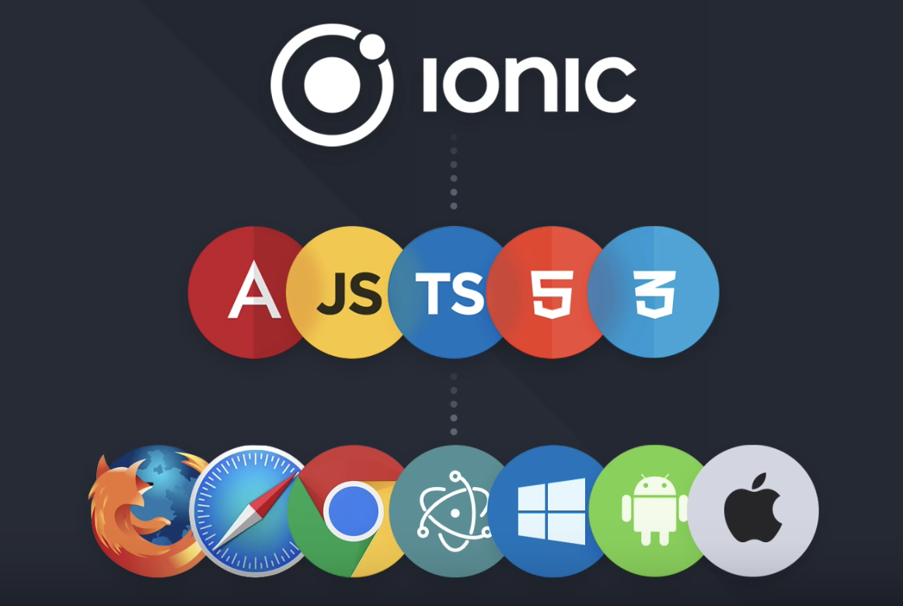

<!doctype html>
<html>

<head>
  <meta charset="utf-8">
  <meta name="viewport" content="width=device-width, initial-scale=1.0, maximum-scale=1.0, user-scalable=no">

  <title>Ionic Framework</title>

  <link rel="stylesheet" href="css/reveal.css">
  <link rel="stylesheet" href="css/theme/sky.css">

  <!-- Theme used for syntax highlighting of code -->
  <link rel="stylesheet" href="lib/css/zenburn.css">

  <!-- Printing and PDF exports -->
  <script>
    var link = document.createElement('link');
    link.rel = 'stylesheet';
    link.type = 'text/css';
    link.href = window.location.search.match(/print-pdf/gi) ? 'css/print/pdf.css' : 'css/print/paper.css';
    document.getElementsByTagName('head')[0].appendChild(link);
  </script>
</head>

<body>
  <div class="reveal">
    <div class="slides">
      <section data-markdown>
        <script type="text/template">
            ## Ionic Framework
            
            open source framework for building mobile apps using Angular

            <small>Presentation by [Feras Deiratany](http://ferasdeiratany.com) | [@FerasDA](http://twitter.com/FerasDA)</small>
          </script>
      </section>
      <section data-markdown>
        <script type="text/template">
              ### Outline
              * What is Ionic
              * Dependencies
              * Demo a new Ionic App
              * Documentation & Resources
            </script>
      </section>
      <section>
        <section data-markdown>
          <script type="text/template">
            

            #### Open source HTML5 and Native Mobile app development framework
          </script>
        </section>
        <section data-markdown>
          <script type="text/template">
            
          </script>
        </section>
        <section data-markdown>
            <script type="text/template">
              ### ONE CODEBASE

              ## RUNNING EVERYWHERE 
            </script>
          </section>
      </section>
      <section>
        <section data-markdown>
          <script type="text/template">
            ### What do you need?
          </script>
        </section>
        <section data-markdown>
          <script type="text/template">
              NodeJs [https://nodejs.org/en/](https://nodejs.org/en/)
          </script>
        </section>
        <section data-markdown>
            <script type="text/template">
                Cordova & Ionic

                ```
                npm install -g cordova ionic
                ```
            </script>
        </section>
        <section data-markdown>
            <script type="text/template">
              A text editor

              
            </script>
        </section>
        <section data-markdown>
            <script type="text/template">
              Developer Accounts

              
            </script>
        </section>
      </section>
      <section data-markdown>
        <script type="text/template">
            ### DEMO
            </script>
      </section>
      <section>
        <section data-markdown>
          <script type="text/template">
            ### Documentation, tools and resources
          </script>
        </section>
        <section data-markdown>
            <script type="text/template">
              |  |  |
              | ------ | ------ |
              | [https://ionicframework.com/docs/](https://ionicframework.com/docs/)
              | [https://ionicframework.com/docs/cli/](https://ionicframework.com/docs/cli/) |
              | [https://creator.ionic.io](https://creator.ionic.io) |
              | [https://ionicframework.com/docs/native/](https://ionicframework.com/docs/native/) |
              | [https://ionicframework.com/pro/view](https://ionicframework.com/pro/view) |
              | [https://angular.io/](https://angular.io/) | 
              | [https://cordova.apache.org/docs/en/latest/](https://cordova.apache.org/docs/en/latest/)

            </script>
          </section>
      </section>
    </div>
  </div>

  <script src="lib/js/head.min.js"></script>
  <script src="js/reveal.js"></script>

  <script>
    // More info about config & dependencies:
    // - https://github.com/hakimel/reveal.js#configuration
    // - https://github.com/hakimel/reveal.js#dependencies
    Reveal.initialize({
      dependencies: [
        { src: 'plugin/markdown/marked.js' },
        { src: 'plugin/markdown/markdown.js' },
        { src: 'plugin/notes/notes.js', async: true },
        { src: 'plugin/highlight/highlight.js', async: true, callback: function () { hljs.initHighlightingOnLoad(); } }
      ]
    });
  </script>
</body>

</html>